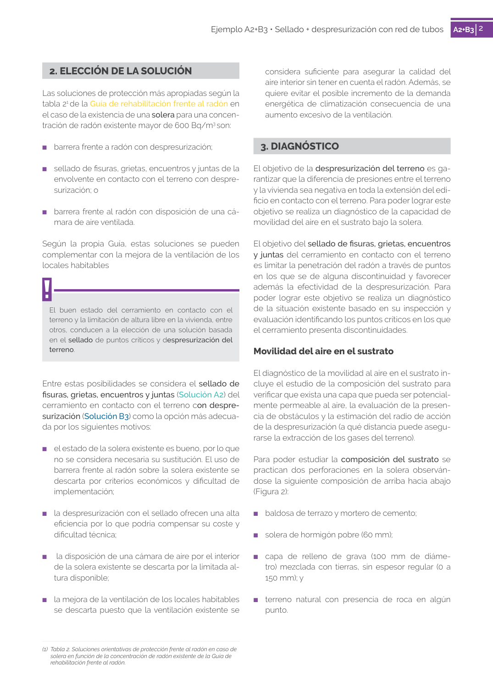

GUIA · EJEMPLO A2+B3 · versión 2017 · capa guia
Formatos: JSON compacto · Markdown · PDF fuente
Ámbito del documento · texto del ámbito · documento y tablas
Tipo: tablas, figuras · nivel 3 · sección estimada: 1. DESCRIPCIÓN DEL EDIFICIO · padre: a0003
EJEMPLO A2+B3 A2+B3 garaje Figura 1 - Sección y planta baja de la vivienda Efectividad Coste Coste por superficie 88% 2.500€ 43€/m2 2 Ejemplo A2+B3 • Sellado + despresurización con red de tubos A2+B32 considera suficiente para asegurar la calidad del aire interior sin tener en cuenta el radón. Además, se quiere evitar el posible incremento de la demanda energética de climatización consecuencia de una aumento excesivo de la ventilación.

PDF fuente redistribuible: copia fiel enlazada en esta página (SHA256 verificado).